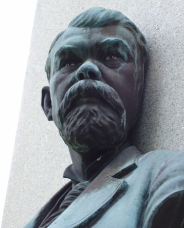
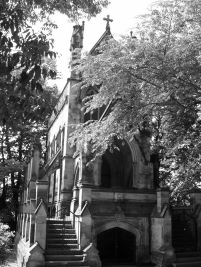
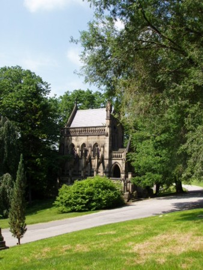

|
Click on any of the titles in the option box below to view the photo:
Spring Grove Cemetery is located at 4521 Spring Grove Avenue in Cincinnati, Ohio (Hamilton County). The coordinates are 39° 10' 32" N, 84° 31' 41" W.
Spring Grove Cemetery is HUGE! Don't expect to explore all of this cemetery in only one day...it is 733 acres! There are 300 acres out of the 733 that are still undeveloped to allow for future growth. The cemetery is absolutely gorgeous...it also serves as an arboretum and park. There are several prizewinning trees in the arboretum, and many centenarians (trees that are 100 years or older). The arboretum also provides a nice home to local wildlife. There are lots of birds, chipmunks, squirrels, among other animals.
Spring Grove Cemetery is the final resting place of many famous individuals. The are approximately thirty-four Civil War Generals, ten governors (from three states), and many baseball players. For a list of some of the most famous people buried here, check out the official Spring Grove Cemetery site.
Like most large cemeteries, there are a few ghost stories. One of the most popular stories is about a large gravestone in Section 100 that has a bust on it. Legend has it that the bust contains real eyes that will follow your every movement around the grave. I will admit that the eyes are kind of eerie looking, they look like they may be made of glass. Here's a photo of the "haunted" bust:

Another well known story involves the Dexter Memorial. This gothic looking memorial is located towards the front of the cemetery on a lake. Supposedly, if you sit on one of the porch you will see two white, shining dogs run by. I can see why ghost stories were told about it, the memorial is really creepy looking! Here are a couple photos:
 
Spring Grove Cemetery is a beautiful, interesting cemetery to visit.
A big thanks to Wes F. for visiting this cemetery with me!
Where do you want to go? Select your destination:
|